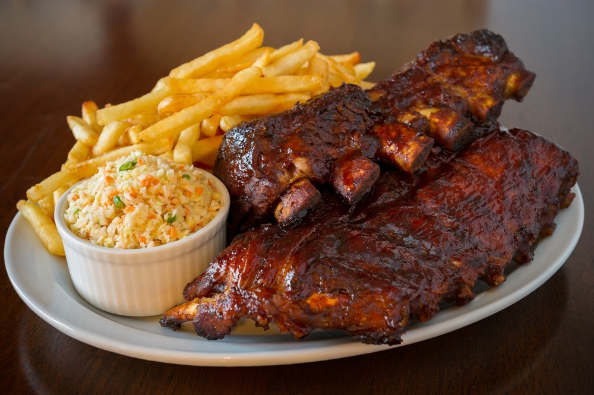

COSTILLAS DE TERNERA AL ESTILO TEXAS
Los primeros indicios de carne a la parrilla datan de hace unos 200,000 años y se encontraron cerca del Monte Carmelo, Israel. Los expertos han encontrado las herramientas y los huesos que dejaron los primeros cazadores. A juzgar por las marcas de quemaduras en los huesos y el tamaño de los animales, los científicos concluyeron que estos hombres fueron los primeros en probar lo que después se convertiría en la barbacoa tal como la conocemos hoy.
TEXAS
Hay muchas tradiciones en este gran estado que suele ser sinónimo de barbacoa. Los inmigrantes alemanes y checos influyeron en el centro de Texas enfocándose en el pecho, las salchichas y las costillas de ternera. Al este del estado, el cerdo y la salsa más tradicionales ocupan un lugar central. En el oeste y sudoeste de Texas, los vaqueros y los mexicanos influyeron en las técnicas de barbacoa con parrilladas más directas y una gama más amplia de carnes como carne de vaca, cerdo y pollo.
INGREDIENTES
Principal
- 8 costillas de ternera
- 100g de virutas de madera
Para el aliño seco
- 2 cucharadas de chile en polvo
- 2 cucharadas de azucar moreno
- 2 cucharadas de sal
- 2 cucharadas de pimienta negra
- 1 cucharada de mostaza en polvo
- 1 cucharada de comino molido
- 2 cucharadas de ajo en polvo
- 2 cucharadas de cebolla en polvo
Para la salsa sopping
- 1 diente de ajo
- ½ cucharadita de sal
- 1 pimiento rojo seco
- 1 cucharada de azúcar moreno
- ½ cucharada de salsa Worcestershire
- 100 ml de vinagre de sidra de manzana
- ¼ cucharadita de comino molido
- 250 ml de ketchup
PREPARACION
Salsa sopping
- Mezcle todos los ingredientes excepto el ketchup en un procesador de alimentos o licuadora.
- Mezcle hasta que quede suave.
- Transfiera la mezcla a una cacerola y agregue ketchup.
- Ponga a hervir y reduzca el fuego.
- Cocine a fuego lento, sin tapa, durante 30 minutos.
Costillas de ternera al estilo Texas
- El día anterior, prepare el aliño seco mezclando todas las especias.
- Cubra las costillas de carne con el aliño seco.
- Coloque las costillas en un plato, cubra con papel de aluminio y deje reposar durante la noche o al menos, 4 horas.
- Al día siguiente, coloque las virutas de madera y el agua en la caja del ahumador o coloque las virutas de madera en una bolsa de papel de aluminio y perfore la bolsa para que salga el humo.
- Encienda la parrilla por un lado hasta que la temperatura llegue a 110°C.
- Coloque la caja de ahumar sobre el fuego.
- Coloque las costillas con el hueso hacia abajo, bien espaciadas, en el costado de la barbacoa donde no haya fuego, de modo que la carne se ase a la parrilla con fuego indirecto.
- Ase las costillas durante al menos 4 horas o más, hasta que la temperatura interna de la carne alcance los 95°C.
- Durante la última hora del asado, unte las costillas con la salsa sopping 2 o 3 veces.
- Sirva con ensalada de col, al horno o ensalada de patata.